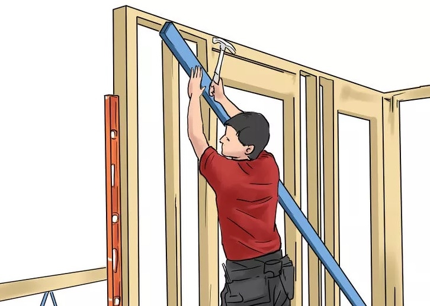
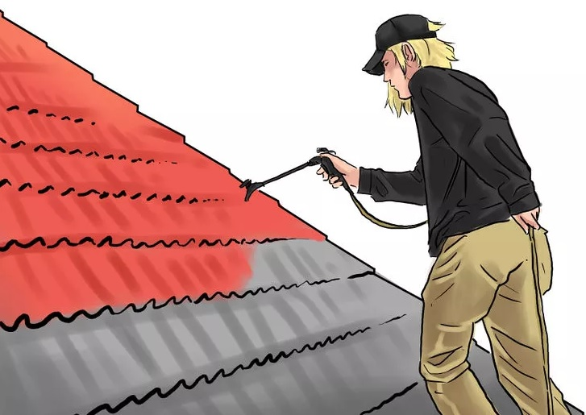

Frame the walls of your house. You will need to lay out the wall lines on the floor, beginning at one corner, marking your bottom plate (called the rat sill) to attach to anchor bolts. As you work, mark the location of doors, windows, and interior wall corners on the sill. Be sure to use special metal connectors/straps at the floor and tops of walls as required by code for storm and earthquake proofing. Use tees at wall intersections, substantial headers for openings in load bearing walls, and allow space at each rough opening for the feature to be installed.
Plumb the walls and brace them securely. Install sheathing if required. Otherwise, use sheet metal straps to diagonally brace all exterior wall corners. Make sure all studs (vertical framing members, usually 2 inch by 4 inch (5 cm by 10 cm) nominal lumber, graded standard or better) are securely nailed in place, straight and square to the wall line.
Lay out the marks for setting your roof trusses. You may want to stick frame your roof, cutting and installing rafters and ceiling joists yourself (especially if you want a usable attic space). Prefab trusses, however, are engineered with lighter, smaller lumber for maximum strength. There are some trusses for attics with high-pitched roofs and dormers, as well as more traditional roofs. Research your options and choose something that works well for your home.
Set each truss in the correct location. Generally, this means 24 inches (61.0 cm) apart from one another, sometimes 16 inches (40.6 cm) for stick-bracing structures. Attach hurricane clips or other connectors to secure them, plumb the center of each truss, and temporarily support them with a rat run bracing near the peak. Install diagonal gable bracing for a roof with gable ends to prevent the roof frame from leaning when you install the roof decking. For a hip roof, install king rafters and hip rafters, being careful to keep the adjacent plane of the roof consistent and straight.
Nail a sub-facia board to connect the ends of each rafter. Build outlookers to support the gable overhang and gable facia boards, if used. Deck the trusses or rafters with plywood, oriented strand lumber, or nominal lumber such as 1 x 6 inch (2.5 cm x 15 cm) tongue and groove boards. In areas where high winds or snow-loading (accumulation) is possible, make sure the roof decking is secured and structurally able to withstand these severe forces and conditions. Use appropriate bracing and fasteners for this scope of work.
Install roofing felt for use as a moisture barrier. To make sure the elements don't set you back as you're working, it's important to install a moisture barrier on your roof even before it's completed. Use 15 or 30 pound (6.8 or 13.8 kg) roofing felt tar paper and simplex nails, roofing tacks, or plastic capped felting tacks to secure it. Begin felting the decking at the lower edge, allowing it to hang over slightly, and overlap subsequent layers to keep water from getting under this moisture barrier.
Install the exterior siding and exterior features such as windows and doors. Many locations require some type of metal flashing to prevent water from penetrating the edges and the gables, but you may be able to seal them sufficiently with caulking if it is permitted and you are able.
Install your final roof. You may choose painted sheet metal panels, rolled steel formed to lengths needed on site, or shingles, terra cotta tiles, or other materials, depending on your preference, costs, and products available at your location. Consider ridge vents, attic exhaust fans, vented dormers, and other architectural details which can increase the comfort of your house while decreasing cooling costs in hot climates.
 